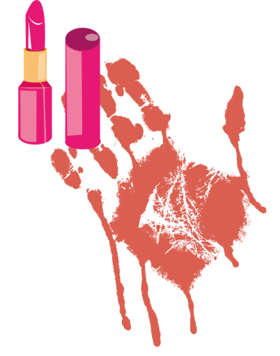
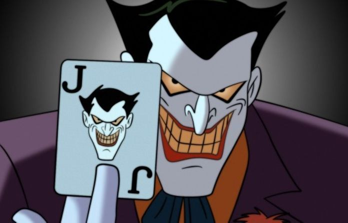

Le Joker prend-il soin de sa peau ?
Un teint pâle, des cheveux verdâtres, un sourire glaçant et un rire cynique
Le Joker est en danger
Il existe une facette encore plus sombre du Joker : le maquillage.
Le visage du Joker aurait bien besoin d'un petit changement d'habitude.
Comment le sauver ?
La santé du Joker est mise en jeu. Une solution doit vite être trouvée.